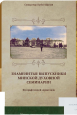
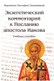

О журнале
«Ступени» — это путь вверх, к совершенству духовного развития человека

«Ступени» — это журнал о православной вере и церковной жизни, издается
преподавателями и студентами Минских духовных академии и семинарии в Свято-Успенском Жировичском монастыре.
Выходит с 2000 года ежеквартально.
Тема номера:
Мы размышляем над самыми важными сторонами духовной жизни
современного человека.
Рубрики журнала:
- «В храме» — доступное объяснение православного богослужения, церковных традиций.
- «Библейский урок» — Священное Писание как руководство к жизни. Что говорит нам Господь через Свое слово?
- «Семинария в лицах» — жизненные судьбы бывших и нынешних преподавателей и студентов Минской духовной семинарии – старейшего учебного заведения на территории Беларуси (основана в 1785 г.).
- «Гостевая» — взгляд на мир людей веры, науки, искусства.
- «За тридевять земель» — незабываемые путешествия по всему миру – миру веры и Церкви.
- Независимость — с Богом и Церковью преодолеваем зависимости современного человека.
- Антивирус — о всем, что выдает себя за веру, но таковой не является.
- Поэзия — и первые шаги, и зрелые успехи поэтов веры, наших современников.
Разделы Журнала:
Новые выпуски Журнала

Расколоведение. Введение
в понятийный аппарат: учебное пособие для бакалавриата теологии

Расколоведение. Введение
в понятийный аппарат: учебное пособие для бакалавриата теологии

Расколоведение. Введение
в понятийный аппарат: учебное пособие для бакалавриата теологии